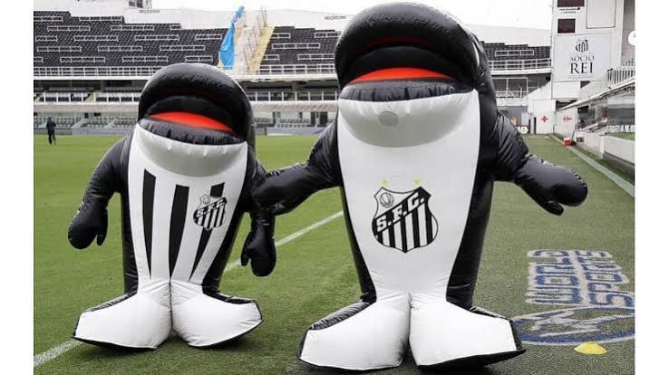

Fundação: 14 de abril de 1912
Fundado na cidade praiana que lhe dá o nome, o Santos Futebol Clube transformou-se em um fenômeno cultural global na década de 1960. Apelidado de "Peixe", o clube foi o responsável por revelar e elevar Edson Arantes do Nascimento, o Pelé, ao posto de Rei do Futebol. O esquadrão alvinegro de Pelé, Pepe e Coutinho encantou o planeta, chegando ao ponto de paralisar guerras na África para que as pessoas pudessem assisti-lo jogar.
Além das inúmeras glórias históricas (como o Bicampeonato Mundial de 62/63 e seis Campeonatos Brasileiros consecutivos), a identidade do Santos é enraizada no futebol moleque, vistoso e ofensivo. O místico estádio da Vila Belmiro continua sendo a "fábrica" de craques conhecida como os "Meninos da Vila", revelando para o mundo gigantes como Robinho e Neymar Jr, que trouxeram a Libertadores de 2011 de volta para casa.